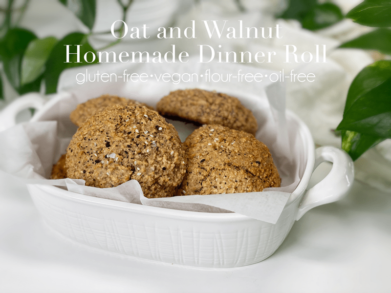
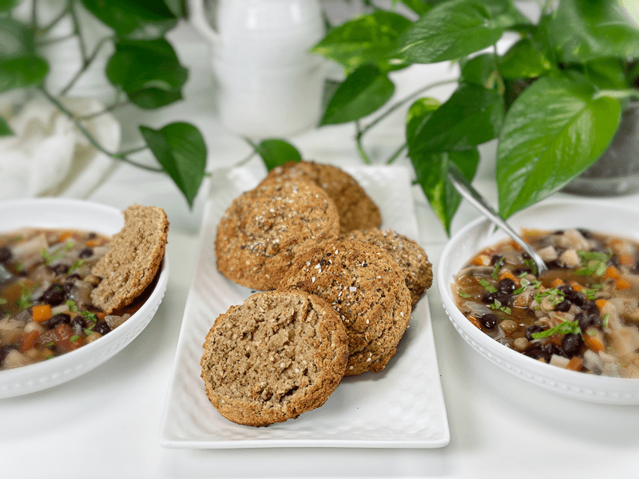
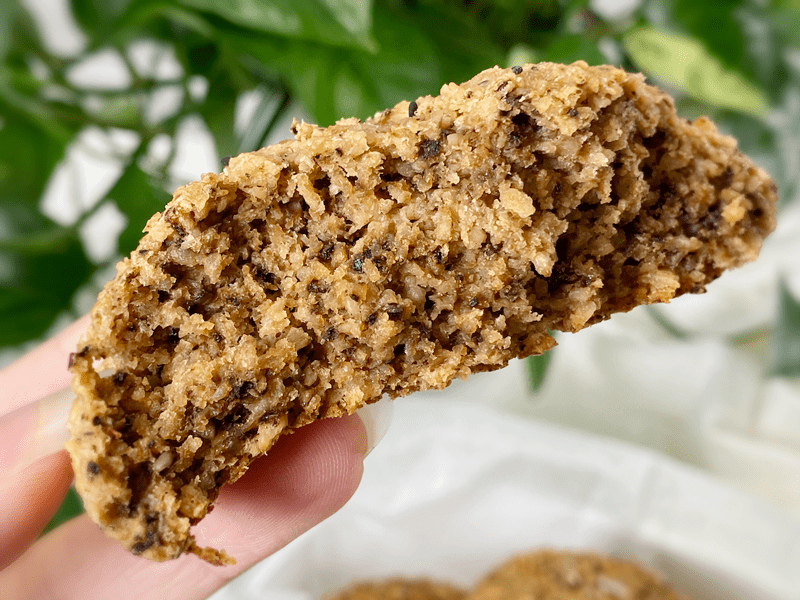

Oat and Walnut Homemade Dinner Rolls | Baked | Gluten-Free | Oil-Free | Vegan
During my quest of to create vegan, gluten-free, dinner rolls, I found myself rummaging through all my ingredients in the fridge, freezer, and pantry. When I think of dinner rolls, I think of butter, and when I think of butter, I think of walnuts. Throughout the years of creating raw vegan recipes, one learns how to get creative with out-of-the-box replacement ingredients, and I have always turned to walnuts to give a hint of butteriness to a recipe.

The other day when Bob was working out in my studio, he hollered that I have too many houseplants in there. Everywhere he turned, they were in his way. “SSSHHHHHH! Don’t let them hear you say that!” I yelled from the other room. So he has to move a plant over– *shrugs* what’s the big deal?! Well, while making these buns I had to scooch three plants over to make room for all my recipe-making tools. I then burned a few pothos plant leaves when I slid the hot baking pan onto the table, bumping into a plant. Maybe, just maybe… Bob has a point. NAH!!! I really don’t think that I can possibly have too many plants! They bring a rich vibrant green color, energy, and life to my space, and that is something that I just won’t sacrifice. Speaking of plants, have you noticed the new plant section that I added to the site a few months back? Welcome to yet another passion of mine.

These buns are perfect for dipping in soup, eating as-is, or sliced in half for sandwich-making. The dinner roll exterior has a firm crust that encases a soft, delicately chewy inner texture. Bob’s been enjoying them every day. Since I have cut nuts out of my diet (for the time being), I have been eating my Oat and Buckwheat Homemade Dinner Rolls right alongside him. So, if you have a nut allergy or like me, you are looking to cut back on them, be sure to check out that recipe as well.
Ingredient Run-Down
Gluten-Free Rolled Oats
- For this recipe, I used certified gluten-free rolled oats. I don’t recommend oat flour, as it would be too heavy for the texture.
- If you wish to ramp up the nutrition and reduce phytic acid, you can soak and dehydrate the oats first. I realize that is a step that requires some planning, so I will leave it up to you. If that idea does interest you, learn how and why (here).
Walnuts
- In all my recipes I recommend raw walnuts that have been soaked. I do this for health and flavor reasons. You can read more about that (here).
- Raw walnuts can have a slight bitterness to them due to the skins, and the soaking process will knock that bitterness down. For this recipe, you can use wet, soaked walnuts or you use walnuts that have already been soaked and dehydrated (which is what I did).
- If you just flat out don’t have the time to soak them, that’s okay… proceed with making the recipe.
Psyllium Husks
- Psyllium husks (not powder) are added to give the rolls that spongy texture that most of us are used to in commercially made bread.
- Psyllium seed husks are one of nature’s most absorbent fibers–they can absorb over ten times their weight in water.
- As psyllium thickens when liquid is added, it is known to help get things moving in the digestion area. So, If you are eating recipes that contain these husks, please be sure to drink plenty of water throughout the day.

Vegan Buttermilk Substitute
- Since this recipe is vegan, I had to create my own “buttermilk.” I accomplished this by mixing plant-based milk with raw apple cider vinegar.
- Alternatively, you can use lemon juice, but my first go-to is apple cider vinegar.
- Not only does the apple cider vinegar work to create buttermilk, it is also used to activate the baking soda.
White Chickpea Miso Paste
- I often use miso paste in place of salt in my dishes. I use Miso Master Organic Chickpea (Soy-Free) Miso because it uses garbanzo beans (chickpeas) instead of soybeans as its base.
- It has a mild salty-sweet umami taste that complements the sweetness found in walnuts.
- If you can’t get your hands on miso paste, you can use sea salt instead.
Vegetable Bouillon Paste
- The use of bouillon paste is totally optional.
- I added it for the extra depth of flavor, without compromising and overpowering the subtle flavor that I was aiming for in a dinner roll.
- In case you are wondering, I haven’t tested powdered bouillon in these rolls, but I am sure it would work.
I hope you find it helpful when I break down the ingredients that I use in my recipes. I feel that it is important to understand what I use and why, so you can learn to be free and creative in your own kitchen. May your days be blessed, amie sue
 Ingredients
Ingredients
Yields 5 (1/2 cup measurement) dinner rolls
- 1 1/2 cups gluten-free rolled oats
- 1/2 cup chopped walnuts
- 1 Tbsp psyllium husks (not powder)
- 1/2 tsp baking soda
- 1 cup unsweetened plant-based milk
- 1 Tbsp apple cider vinegar
- 2 tsp vegetable bouillon paste
- 1 tsp white chickpea miso paste
Preparation
- Preheat the oven to 450 degrees (F) and line the baking sheet with parchment paper.
- In a small bowl, combine the plant milk and apple cider vinegar; set aside for 10 minutes so it can curdle (think buttermilk).
- I used oat milk in my dinner rolls.
- In a food processor, fitted with the “S” blade, combine the oats, walnuts, and baking soda.
- Process long enough so the dry ingredients mix together and the oats and buckwheat break down some. It doesn’t need to be processed into flour.
- Add the vegetable bouillon and miso, along with the “buttermilk.” Process till well combined.
- Scoop out roll dough onto a parchment paper-lined baking sheet.
- I used a 1/2 cup ice cream/cookie scoop, making sure to level it off.
- Bake for 15 minutes until lightly brown. They darken quite a bit while baking.
- Immediately transfer the rolls to a cooling rack so the bottoms don’t get soggy.
- Store on the counter in an airtight container for roughly 3 days. These also freeze and thaw well.
© AmieSue.com